4. How Did People Write Code in the Early Days of Computing?
When computers were first introduced, how did people write code for them? In fact, there was no software similar to what we have today. Many functions were implemented as separate functional units in circuits. ENIAC could run different programs by wiring those units together and setting switches, a process that could take days. Punched cards were used for input and output, not to store its programs[1][4].
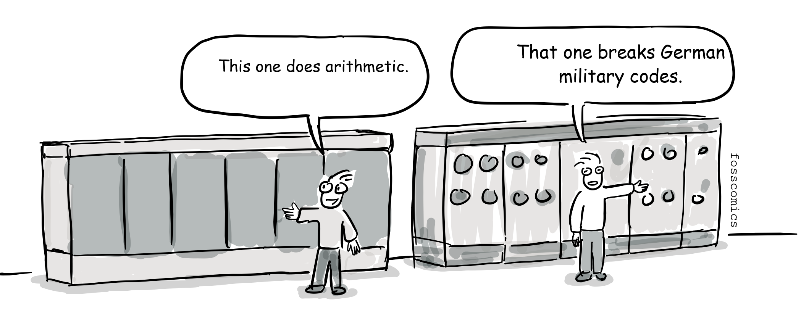
"This one does arithmetic."
"That one breaks German military codes."
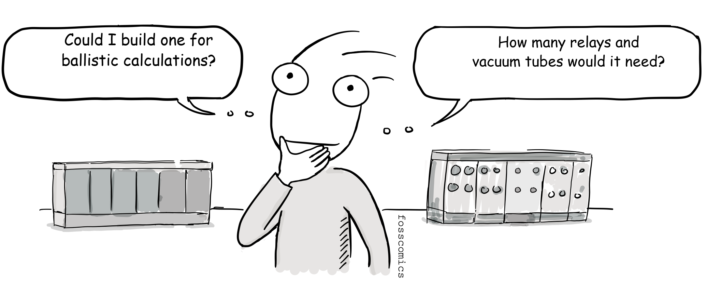
"Could I build one for ballistic calculations?"
"How many relays and vacuum tubes would it need?"
Programming became much more practical when stored-program computers were introduced. A program could be loaded into electronic memory and executed without rewiring the machine. The Manchester Baby ran a stored program in 1948, and EDSAC entered regular operation in 1949. EDVAC was highly influential in the development of the stored-program design, although it became operational later.
A program is made up of instructions that a machine can understand and execute. At the lowest level, these instructions are called machine code. Machine code is encoded as patterns of binary digits, or zeros and ones, which are difficult for people to read and remember.
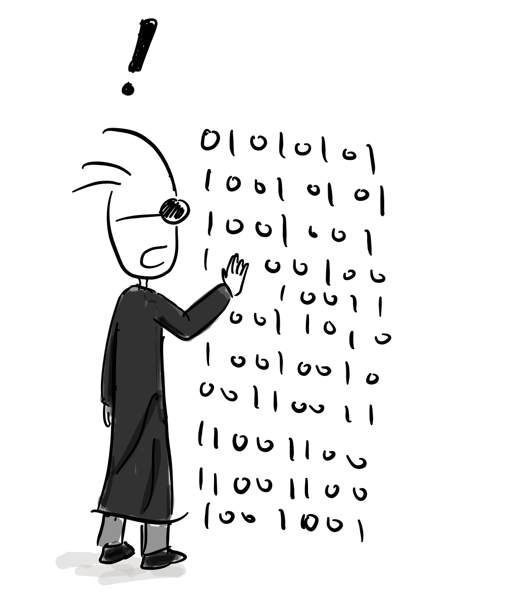
That is why assembly language appeared early in the history of computer programming. Assembly language made machine instructions easier to express with short symbolic codes called mnemonics. EDSAC programmers used single-letter order codes, while a hard-wired bootstrap called the Initial Orders loaded programs from paper tape and translated those codes into instructions[2].
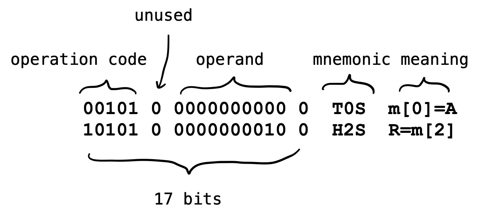
Each EDSAC instruction occupied a 17-bit word: a five-bit operation code, one unused bit, a ten-bit address, and a final bit selecting a short or long operand.
The two EDSAC assembly instructions shown above can be explained as follows:
T 0 S: Store the value in the accumulator at memory address0, then clear the accumulator by resetting it to0.H 2 S: Load the value stored at memory address2into the multiplier register, preparing it for a multiplication operation.- The final
Sindicates that the instruction uses EDSAC's short-word format.
As you can see, raw binary instructions are difficult for people to understand and remember. Assembly language therefore represents each low-level instruction, or operation code, with a mnemonic. Converting assembly language into machine code is called assembling.
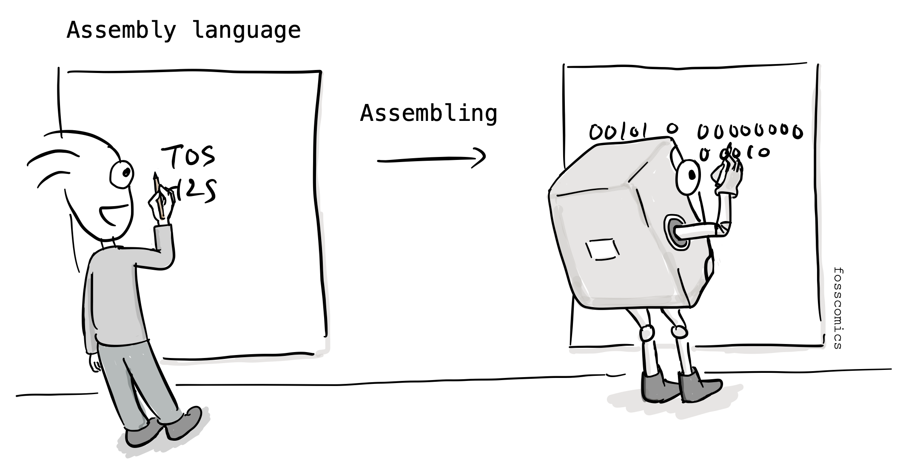
In the early days, programmers sometimes did this work by hand, so the process was called hand assembly. Without an assembler, they had to translate assembly code into machine code manually by consulting mnemonic conversion tables. Symbolic assembly languages were already in use by the late 1940s and early 1950s, before high-level languages became common.
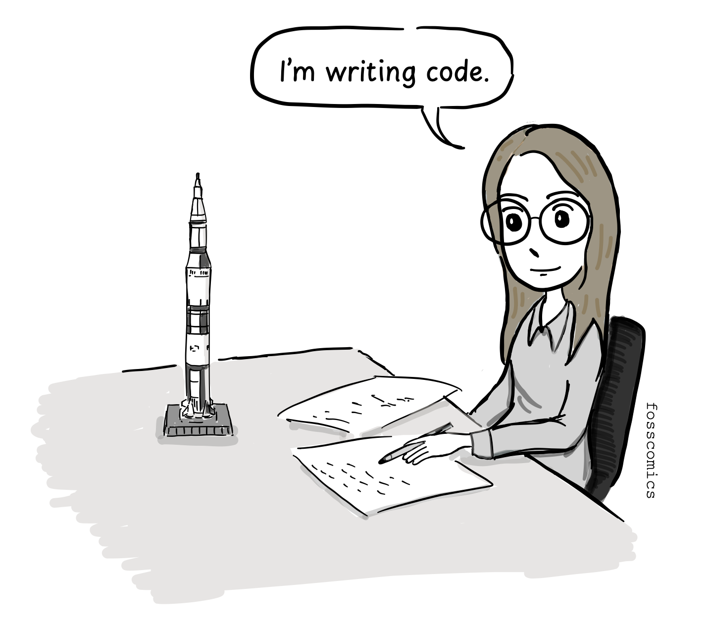
"I'm writing code."
Interactive terminals with keyboards and displays remained uncommon in the early 1960s. Multics, whose design began in 1964-65 as a joint project of MIT Project MAC, Bell Labs, and General Electric, was intended to let many users work interactively through remote terminals[3]. By the 1970s, screen-and-keyboard terminals had become much more common. But before such terminals became common, how did programmers write code and check the results?
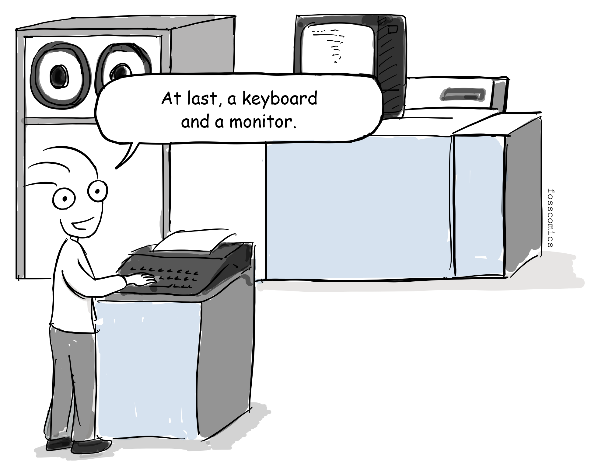
"At last, a keyboard and a monitor."
Early programmers often used punched cards to write code. Since the late nineteenth century, punched cards had been used to record and store data for machine processing, including work for the U.S. Census Bureau. The basic idea is loosely comparable to a modern OMR (optical mark recognition) sheet: information is encoded by marking, or in this case punching, specific positions.
IBM standardized its widely adopted 80-column card in 1928 and supplied cards, keypunches, readers, and tabulating equipment around the world. Punched cards later became an important medium for entering programs and data into computers[5].
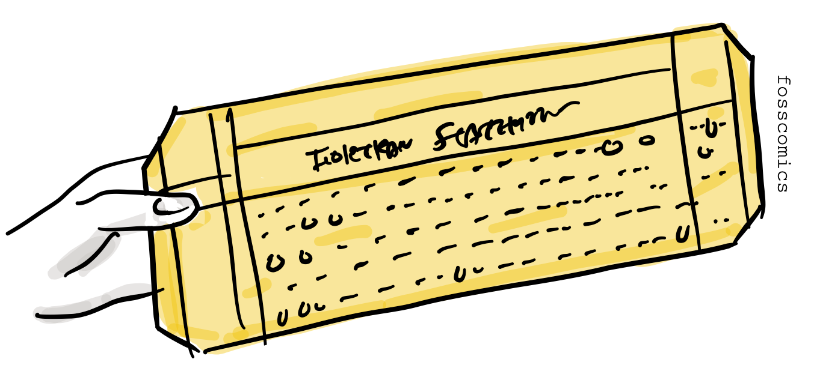
Programmers first wrote source code on coding sheets and checked it by hand. They or a keypunch operator then punched the program onto cards, usually with one source statement per card. Depending on the language and computer, an assembler or compiler translated the submitted program into machine code.
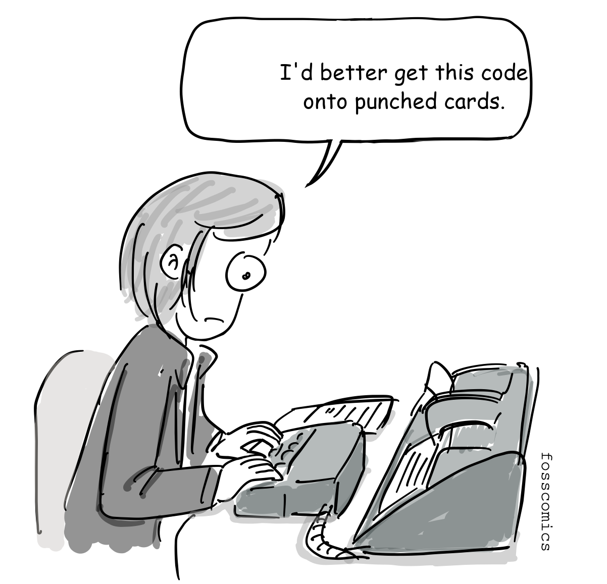
"I'd better get this code onto punched cards."
Programmers submitted their card decks to a computer-room operator, who loaded each job into a card reader. They often waited in line to submit a deck and might not receive the printed results until much later. If the program failed, they had to correct or replace the affected cards and submit the deck again.
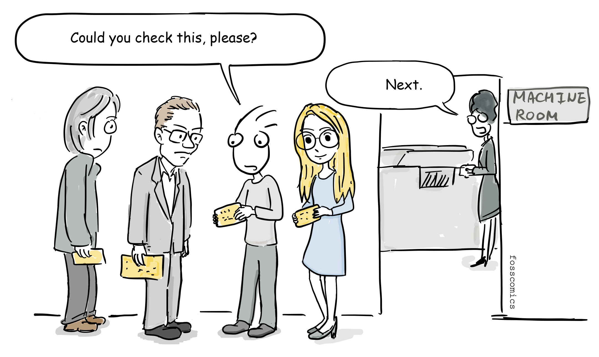
"Could you check this, please?"
"Next."
Before a program was punched onto cards, copying it could be as simple as transcribing someone else's handwritten source code.
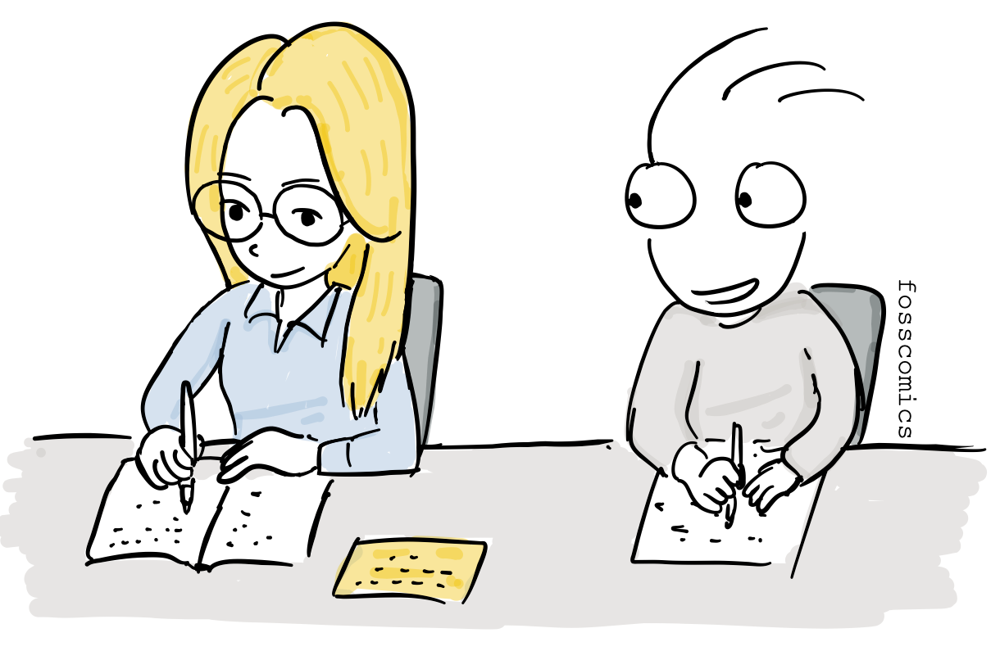